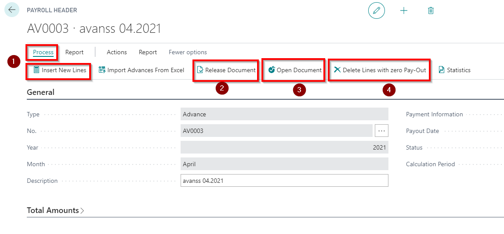
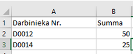

Advances
Advance list can be created for those employees, who have advance payroll component with value in the employee' s card. The advances paid will be automatically included in the calculation of the monthly salary and deducted from the amount to be paid.
A new advance header can be created by clicking on shortcut + Advance List at the LV Payroll Role Center. All advance lists are registered in Advance List.
The number of the list will be assigned automatically. Next choose a Year and Month (automatically filled with current year and month).
Automatic generation of a list of advance starts by clicking on Process - Insert New Lines ( ).
).
After the advance list generation and initial checks, it is recommendable to change the status from Open to Released ( ). This ensures calculating data protection against accidental corrections. If necessary, the status can be changed back to Open (
). This ensures calculating data protection against accidental corrections. If necessary, the status can be changed back to Open ( ).
).
If prior to employee list generation no filters were used, then system will includes whole employee list. For those, who don't have advance values, the line will be with zero amount. These employees can be delete from the list by clicking on button Delete lines with zero Pay-Out ().

In the Advance list header's toolbar is available following functions:
Pay Slip – Possibility to print and send salary pay slips on advance payment.
Export to Payment Journal – payment journal entries will be created and ready to sent to bank and post in General Ledger.
Detailed Salary List – Advance list printout for the check and/or approvals.
Import to Excel - it is possible to import advance data from an Excel file where the data must be entered in the following order:
